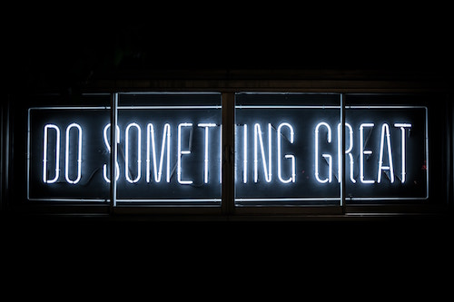

High School
I’m really iffy on my high-school choices. But the school I feel would benefit me the most and has most of the things I’m looking for to work on would be CAMS. They offer good education, lots of clubs, and although the work there could be overwhelming, they have great support groups to help the students. It has a lot of factors that will really help me in the future. Another school that I’m considering if I don’t get into CAMS would be Millikan. They not only have good programs, but a lot of my friends are going there, and they apparently have a good social environment. The last choice I would probably choose would be Lakewood ATM, since I want to continue learning about technology.

College
I don’t really know what college I want to go to, just something that would increase and help me grow my skills in art and technology. I want to be able to go to a college that would make me be able to make a good future for myself and my family.
Carreer Interests
As stated before, drawing is something I really, really love to do, along with using technology. Since, art doesn’t really give me income, and I need to make a living on something that’s not a once in a year art commission, I’d stay with my drive for technology. I want to be able to do something I love, and that would be working with computers, or any technology. I’d want to be a graphic designer. From an essay we did on career choices in sixth grade, the jobs that would fit me would be web developer, computer programmer, and of course a graphic designer.